사회조사분석사-2급 (2017-08-26 기출문제)
1과목: 조사방법론 I
1. 면접조사에서 면접과정의 관리에 대한 설명으로 옳은 것은?
- 면접지침을 작성하여 응답자들에게 배포한다.
- 면접원에 대한 사전교육은 면접원에 의한 편향(bias)을 크게 할 수 있다.
- 면접기간 동안에도 면접원에 대한 철저한 통제가 이루어져야 한다.
- 면접원 교육과정에서 예외적인 상황은 언급하지 않도록 주의한다.
(정답률: 61%)

2. 집단조사를 실시할 때 일반적으로 유의해야 할 사항과 가장 거리가 먼 것은?
- 응답자들에 대한 통제가 용이하다.
- 조사기관으로부터 협력을 얻어야 한다.
- 집단상황이 응답을 왜곡시킬 가능성이 있다.
- 집단조사를 승인해 준 당국에 의해 조사결과가 이용될 것이라고 인식될 가능성이 있다.
(정답률: 64%)
3. 귀납법에 관한 설명과 가장 거리가 먼 것은?
- 귀납적 논리의 마지막 단계에서는 가설과 관찰결과를 비교하게 된다.
- 관찰된 사실 중에서 공통적인 유형을 객관적으로 증명하기 위하여 통계적 분석이 요구된다.
- 특수한(specific)사실을 전제로 하여 일반적(general) 진리 또는 원리로서 결론을 내리는 방법이다.
- 경험의 세계에서 관찰된 많은 사실들이 공통적인 유형으로 전개되는 것을 발견하고 이들의 유형을 객관적인 수준에서 증명하는 것이다.
(정답률: 52%)
4. 관찰법의 장점과 가장 거리가 먼 것은?
- 조사에 비협조적이거나 면접을 거부할 경우에 효과적이다.
- 조사자가 현장에서 즉시 포착할 수 있다.
- 관찰결과에 대하여 객관성이 확보된다.
- 행위나 감정을 언어로 표현하지 못하는 유아나 동물이 조사대상인 경우 유용하다.
(정답률: 74%)
5. 연구문제가 학문적으로 뜻 있는 것이라고 할 때 학문적 기준과 가장 거리가 먼 것은?
- 독창성을 가져야 한다.
- 이론적인 의의를 지녀야 한다.
- 경험적 검증가능성이 있어야 한다.
- 실천적 유관적합성(有關適合性)을 지녀야 한다.
(정답률: 52%)
6. 실험설계를 위한 필수요건과 가장 거리가 먼 것은?
- 실험대상자들을 실험집단과 통제집단으로 무작위 배분하여야 한다.
- 독립변수는 실험집단에만 투입하고 통제집단은 통제되어야 한다.
- 통제집단과 비교집단을 함께 갖추어야 한다.
- 독립변수의 효과를 추정하기 위해 종속변수가 비교되어야 한다.
(정답률: 51%)
7. 다음 중 종단적 연구가 아닌 것은?
- 시계열연구(time sedies study)
- 동질성집단연구(cohort study)
- 패널연구(Panel study)
- 단면연구(Cross-sectional Study)
(정답률: 52%)
8. 관찰 대상자가 관찰사실을 아는지에 대한 여부 기준으로 관찰기법을 분류한 것은?
- 자연적/인위적 관찰
- 공개적/비공개적 관찰
- 체계적/비체계적 관찰
- 직접/간접 관찰
(정답률: 69%)
9. 온라인조사에 대한 설명과 가장 거리가 먼 것은?
- 방문조사나 특정 웹사이트를 우연히 찾은 사람을 대상으로 한 조사의 경우 표본의 대표성을 확하기 용이하다.
- 전통적인 현장조사에 비해 짧은 기간에 적은 비용으로 조사를 실시할 수 있다.
- 표본의 대표성을 확보하기 어렵고, 특정 연령층이나 성별에 따른 편중된 응답이 도출될 위험성이 있다.
- 한 사람이 여러 차례 응답할 가능성을 차단해야 한다.
(정답률: 77%)
10. 조사자가 소수의 응답자 집단에게 특정주제에 대하여 토론하게 한 다음 필요한 정보를 알아내는 자료수집방법은?
- 현지조사법(field survey)
- 비지시적 면접(nondirective interview)
- 표적집단면접(focus group interview)
- 델파이 서베이(delphi survey)
(정답률: 70%)
11. 다음 ( )에 알맞은 변수를 순서대로 나열한 것은?
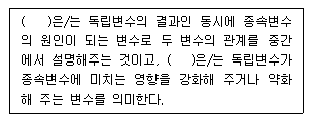
- 조절변수 - 억제변수
- 매개변수 - 구성변수
- 매개변수 - 조절변수
- 조절변수 - 매개변수
(정답률: 77%)
12. 다음의 사례에서 활용한 연구방법은?
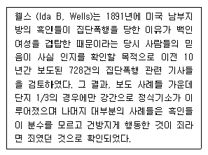
- 투사법
- 내용분석법
- 질적연구법
- 사회성측정법
(정답률: 73%)
13. 과학적 연구의 특징에 해당하지 않는 것은?
- 과학적 연구는 논리적(logical)이다.
- 과학적 연구는 직관적(intuitive)이다.
- 과학적 연구는 결정론적(deterministic)이다.
- 과학적 연구는 일반화(generalization)를 목적으로 한다.
(정답률: 57%)
14. 과학적 연구의 과정으로 가장 적합한 것은?
- 이론→가설→관찰→경험적 일반화
- 가설→경험적 일반화→관찰→이론
- 관찰→이론→경험적 일반화→가설
- 경험적 일반화→가설→이론→관찰
(정답률: 67%)
15. 다음 조사 주제 중 분석단위가 나머지 셋과 가장 다를 것으로 생각되는 주제는?
- 가구소득 조사
- 가구당 자동차 보유현황 조사
- 대학생의 연령 조사
- 슈퍼마켓의 종업원 수 조사
(정답률: 55%)
16. 인과관계에 대한 설명으로 틀린 것은?
- 원인으로 추정되는 변수와 결과로 추정되는 변수가 동시에 존재하며, 상호연관성을 가지고 변화해야 한다.
- 원인과 결과를 추정하기 위해서는 원인이 결과보다 시간적으로 우선하여야 한다.
- 사회과학에 있어서 인과관계는 미시 매개체 수준을 전제로 하고 있다.
- 사회현상을 연구하는 것은 개방시스템을 전제하므로 인과관계에 대하여 결과를 방생시키는 원인이 여러 가지 있을 수 있다.
(정답률: 66%)
17. 대통령 후보자 간 TV 토론에 대한 국민들의 반응을 조사하는 방법으로 가장 적합한 것은?
- 전화여론조사
- 우편조사
- 면접조사
- 참여관찰
(정답률: 76%)
18. 개방형 질문에 대한 설명으로 틀린 것은?
- 자유응답형 질문으로 응답자가 할 수 있는 응답의 형태에 제약을 가하지 않고 자유롭게 표현하는 방식이다.
- 표현상의 차이는 있으나 응답에 대한 동일한 해석이 가능하므로 응답의 일관성을 유지할 수 있다.
- 강제성이 없으며, 다양한 응답을 얻을 수 있다.
- 특정 견해에 대한 탐색적 질문방법으로 적합하다.
(정답률: 77%)
19. 다음은 무엇에 관한 설명인가?
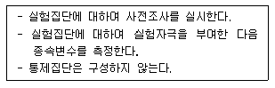
- 단일집단 사후측정설계(one group posttest - only design)
- 집단비교설계(static - group comparison)
- 솔로몬 4집단 설계(solomon four - group design)
- 단일집단 사전사후측정설계(one - group pretest - posttest design)
(정답률: 65%)
20. 설문지의 지시문에 들어갈 내용과 가장 거리가 먼 것은?
- 연구목적
- 연구자 신분
- 응답자 특성
- 표집방법
(정답률: 55%)
21. 다음 설명은 외생변수를 통제하는 방법 중 무엇에 해당하는가?
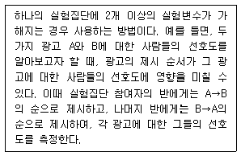
- 매칭(matching)
- 제거(elimination)
- 무작위화(randomization)
- 상쇄(counterbalancing)
(정답률: 66%)
22. 면접조사 시 비교적 인지수준이 낮은 응답자들이 면접자의 생각이나 지시를 비판없이 수용하여 응답하게 될 가능성이 높은 것은 어떤 효과 때문인가?
- 1차 정보 효과
- 응답순서 효과
- 동조 효과
- 최근 정보 효과
(정답률: 67%)
23. 다음 질문항목의 문제점을 지적한 것으로 가장 적합한 것은?
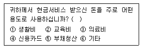
- 가능한 응답을 모두 제시해 주어야 한다.
- 응답항목들 간의 내용이 중복되어서는 안된다.
- 하나의 항목으로 2가지 내용의 질문을 해서는 안된다.
- 대답을 유도하는 질문을 해서는 안된다.
(정답률: 69%)
24. 사회과학연구에서 인과관계를 규명하는 내용에 관한 설명으로 틀린 것은?
- 두 변수 사이에 시간적 순서가 존재해야 한다.
- 두 변수 간에는 정(+) 혹은 부(-)적 관계가 존재할 수 있다.
- 두 변수 간에는 상관관계가 존재해야 한다.
- 두 변수 간에 상관이 발견되면 인과관계도 성립된다.
(정답률: 66%)
25. 다음 사례에 대한 타당도 저해요인에 기초한 비판 중 그 성격이 나머지와 다른 하나는?
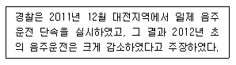
- 가장 음주운전이 많은 시기는 연말이므로, 자연스럽게 예전의 상태로 돌아온것뿐이다.
- 경찰이 2012년부터 새 음주측정기로 교체하였으므로, 이 감소는 음주측정기의 교체에 의한 것이다.
- 결과는 대전지역에서나 가능한 이야기이지, 다른 지역에서는 감소시키기 어려웠을 것이다.
- 2012년부터 주류세가 대폭 인상되었으므로, 음주가 줄어든 것은 음주운전 감소가 원인이다.
(정답률: 58%)
26. 기술적(descriptive) 조사에 대한 설명으로 틀린 것은?
- 현상에 대한 탐구와 명료화를 주목적으로 한다.
- 계획의모니터링, 평가에 필요한 자료를 산충하기 위하여 자주 사용된다.
- 사회현상이 야기된 원인과 결과를 밝혀 정확히 기술하는 것이다.
- 행정실무자와 정책분석가들에게 가장 기본적인 조사도구이다.
(정답률: 47%)
27. 다음 중 사례조사에 관한 설명으로 가장 적합한 것은?
- 본 조사를 실행하기 앞서 먼저 시행한다.
- 조사의 범위를 한 지역 또는 한 번의 현상에 국한시켜 연구하고자 하는 현상의 대표성을 유지시킨 채 결과를 도출하는 방법이다.
- 일정지역 또는 작은 sample을 추출하여 대표성을 유지시킨 채 사전에 진행하는 것이다.
- 조사의 타당도, 신뢰도를 측정해 보는 방법이다.
(정답률: 42%)
28. 과학의 기본적인 목적과 가장 거리가 먼 것은?
- 과학적 이론은 자연 및 사회현상 속에서 존재하는 논리적이고 지속적인 패턴을 알아내는데 있다.
- 과학의 연구대상은 존재하는 것과 가치관이 포함된 당위를 대상으로 한다.
- 과학은 변수들 사이의 관계를 기술하고 설명하는 데 있다.
- 과학은 이론을 바탕으로 현상을 예측하는데 있다.
(정답률: 64%)
29. 우편조사의 응답률에 영향을 미치는 요인에 대한 설명으로 틀린 것은?
- 대상자의 범위가 극히 제한된 동질집단의 경우 회수율이 낮다.
- 질문지의 양식이나 우송방법에 따라 다를 수 있다.
- 응답에 대한 동기부여가 중요하다.
- 연구주관기관과 지원단체의 성격이 중요하다.
(정답률: 63%)
30. 다음 중 질문지 작성의 원칙이 아닌 것은?
- 명확성
- 부연설명
- 가치중립성
- 규범적 응답의 억제
(정답률: 57%)
2과목: 조사방법론 II
31. 종교와 계급이라는 2개의 변수와 각 변수에는 4개의 범주를 두고(4종류의 종교 및 4종류의 계급) 표를 만들 때 칸들이 만들어진다. 각 칸마다 10가지 사례가 있다면 표본크기는?
- 8
- 16
- 80
- 160
(정답률: 56%)
32. 지수(index)에 관한 설명으로 틀린 것은?
- 복합측정치로 여러 문항으로 구성된다.
- 추상적 개념을 단일수치로 표현할 수 있다.
- 지표(indicator)보다 변수의 속성을 파악하기 쉽다.
- 측정대상의 개별속성에 부여한 개별지표점수의 합으로 표시할 수 없다.
(정답률: 53%)
33. 연속변수(continuous variable)와 이산변수(discrete variable)에 관한 설명으로 틀린 것은?
- 연속변수는 사람ㆍ대상물 또는 사건을 그들 속성의 크기나 양에 따라 분류하는 것이다.
- 연속변수는 측정한 값들이 척도상에서 무한대로 미분해도 가능하리만큼 연속성을 띤 것으로 거의 무한개의 값을 가질 수 있다.
- 이산변수는 정수값으로 구성된다.
- 등간척도ㆍ비율척도는 이산변수와 관련되어 있다.
(정답률: 55%)
34. 크론바하의 알파계수(Cronbach's alpha)는 다음 중 어떤 것을 나타내는 값인가?
- 동등형 신뢰도
- 내적일관성 신뢰도
- 검사 - 재검사 신뢰도
- 평가자 간 신뢰도
(정답률: 66%)
35. 동일대상에게 시기만 달리하여 동일 측정도구로 조사한 결과를 비교하는 신뢰도 측정방법은?
- 재검사법(test-retest method)
- 복수양식법(parallel-forms technique)
- 반분법(split-half method)
- 내적 일관성법(internal consistency)
(정답률: 72%)
36. 주민등록번호, 도서분류번호, 자동차번호 등과 같은 수치는 어떤 수준의 척도를 의미하는가?
- 명목척도
- 서열척도
- 등간척도
- 비율척도
(정답률: 69%)
37. 표집과 관련된 용어에 대한 설명으로 틀린 것은?
- 모집단이란 우리가 규명하고자 하는 집단의 총체이다.
- 표집단위란 표집과정의 각 단계에서의 표집대상을 지칭한다.
- 관찰단위란 직접적인 조사대상을 의한다.
- 표집간격이란 표본을 추출할 때 추출되는 표집단위와 단위 간의 간격을 의미한다.
(정답률: 35%)
38. 다음 중 개념타당성(construct validity)에 관한 설명으로 틀린 것은?
- 특정개념의 이해와 관련된 타당도이다.
- 타당도의 개념을 가장 잘 나타내는 것이다.
- 다른 개념과는 상관관계가 판이하게 낮아야 한다는 타당도이다.
- 특정한 측정도구의 대표성에 관한 개념으로 측정도구가 갖추어야 할 최소한의 타당도이다.
(정답률: 24%)
39. 다음 척도의 종류는?
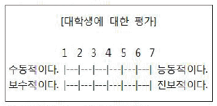
- 서스톤척도
- 리커트척도
- 거트만척도
- 의미분화척도
(정답률: 60%)
40. 다음 중 비확률표본추출방법(non-probability sampling)에 해당하지 않는 것은?
- 불비례 층화표본추출법(disproportionate stratified sampling)
- 편의표본추출법(convenience sampling)
- 할당표본추출법(quota sampling)
- 판단표본추출법(judgment sampling)
(정답률: 60%)
41. 척도에 관한 설명으로 틀린 것은?
- 척도는 계량화를 위한 도구이다.
- 척도의 중요한 속성은 연속성이다.
- 척도를 통해 모든 사물을 모두 측정할 수 있다.
- 척도는 일정한 규칙에 따라 측정대상에 표시하는 기호나 숫자의 배열이다.
(정답률: 57%)
42. 변수와 측정수준의 연결이 옳은 것은?
- 빈곤율 - 명목변수
- 직업분류 - 서열변수
- 청년실업자수 - 비율변수
- 야구선수의 등번호 - 등간변수
(정답률: 69%)
43. “노인의 사회참여가 높을수록 자아존중감이 향상되고, 자아존중감의 향상으로 생활만족도가 높아진다.”에서 자아존중감은 어떤 변수인가?
- 종속변수
- 매개변수
- 외생변수
- 통제변수
(정답률: 67%)
44. 다음 표집방법 중 표집오차의 추정이 확률적으로 가능한 것은?
- 할당표집
- 유의표집
- 눈덩이표집
- 단순무작위표집
(정답률: 64%)
45. 측정의 신뢰도를 높이는 방법으로 틀린 것은?
- 측정도구의 내용을 명확하게 한다.
- 측정자에게 측정도구에 대한 사전교육을 충분히 한다.
- 조사대상자가 잘 모르는 내용이라도 측정을 한다.
- 동일개념이나 속성을 측정하기 위해 가능한 측정항목수를 늘린다.
(정답률: 70%)
46. 태도척도에서 부정적인 극단에는 1점을, 긍정적인 극단에는 5점을 부여한 후, 전체 문항의 총점 또는 평균을 가지고 태도를 측정하는 척도는?
- 서스톤척도
- 리커트척도
- 거트만척도
- 의미분화척도
(정답률: 49%)
47. 층화(stratified)표본추출법에 관한 설명으로 틀린 것은?
- 모집단을 일정 기준에 따라 서로 상이한 집단들로 재구성한다.
- 동질적인 집단에서의 표집오차가 이질적인 집단에서의 오차보다 작다는데 논리적인 근거를 둔다.
- 비례층화추출법과 불비례층화추출법으로 구분할 수 있다.
- 집단 간에 이질성이 존재하는 경우 무작위표본추출보다 정확하게 모집단을 대표하지 못하는 단점이 있다.
(정답률: 57%)
48. 측정수준에 따른 척도에 대한 설명으로 틀린 것은?
- 명목척도는 성별과 종교처럼 분류적인 개념만을 내포한다.
- 서열척도는 특정한 성격을 갖는 정도에 따라 범주를 서열화한다.
- 등간척도는 IQ처럼 대상 자체가 갖는 속성의 실제값을 나타낸다.
- 비율척도는 소득과 성비처럼 0이라는 절대적 의미를 갖는 값이 존재한다.
(정답률: 56%)
49. 어떤 공정으로부터 제품이 생산되어 나오는 경우 일정 시간간격마다 하나의 표본을 뽑는다거나, 수입품 검사에 있어서 선창이나 창고에서 표본을 뽑게 되면 내부나 밑에서 표본이 뽑혀지는 것이 어렵기 때문에 운송 중에 일정 시간마다 표본을 뽑는다고 하였을 때, 이에 해당되는 표본추출방법은?
- 편의표본추출(convenience sampling)
- 계통표본추출(systematic sampling)
- 층화표본추출(stratified sampling)
- 눈덩이표본추출(snowball sampling)
(정답률: 57%)
50. 조작적 정의에 관한 설명으로 옳은 것은?
- 현실세계에서 검증할 수 없다.
- 개념적 정의에 앞서 사전에 이루어진다.
- 경험적 지표를 추상적으로 개념화하는 것이다.
- 개념적 정의에 최대한으로 일치하도록 정의해야 한다.
(정답률: 46%)
51. 개념타당성(construct validity)와 관련된 개념이 아닌 것은?
- 다중속성-다중측정 방법
- 요인분석
- 이론적 구성개념
- 예측적 타당도
(정답률: 46%)
52. 어떤 연구자가 한도시의 청소년 1000명을 대상으로 무작위 추출하여 인터넷이용과 부모와의 대화량이 관계를 조사한 결과, 인터넷의 이용량이 많은 청소년일수록 부모와의 대화량도 유의미하게 작은 것으로 나타났다. 이를 토대로 인터넷 이용량과 부모와의 대화량 사이에 인과적인 설명을 하는 경우 문제가 되는 인과성의 요건은?
- 경험적 상관관계
- 허위적 상관
- 통계적 통제
- 시간적 순서
(정답률: 50%)
53. 여성근로자를 대상으로 하는 사회조사에서 변수가 될 수 없는 것은?
- 성별
- 연령
- 직업종류
- 근무시간
(정답률: 72%)
54. 신뢰도와 타당도간의 관계를 보여주는 다음 그림 중에서 신뢰도는 있으나 타당도가 떨어지는 것은?
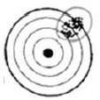
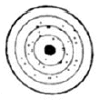
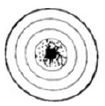
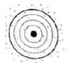
(정답률: 72%)
55. 측정하고자 하는 것을 얼마나 정확히 측정했는가에 관한 것은?
- 신뢰도
- 타당도
- 정밀도
- 판별도
(정답률: 65%)
56. 측정대상들의 편견에 의해서 발생하는 측정오류와 가장 거리가 먼 것은?
- 고정반응
- 사회적 적절성 편견
- 문화적 차이 편견
- 무작위적 오류
(정답률: 68%)
57. 다음 중 표집오차(sampling error)에 관한 설명으로 틀린 것은?
- 전체 표본의 크기가 같다고 했을 때, 단순무작위표본 추출법에서보다 층화표본추출법에서 표집오차가 작게 나타난다.
- 전체 표본의 크기가 같다고 했을 때, 단순무작위표본 추출법에서보다 집락표본누출법에서 표집오차가 크게 나타난다.
- 단순무작위표본추출법에서 표집오차는 표본의 크기가 클수록 커진다.
- 단순무작위표본추출법에서 표집오차는 분산의 크기가 클수록 커진다.
(정답률: 57%)
58. 층화무작위표본추출법과 군집표본추출법에 대한 설명으로 틀린 것은?
- 확률표본추출법이다.
- 모집단의 모든 요소가 추출될 확률이 동일하다.
- 표본추출의 단위가 모집단의 요소이다.
- 군집표본추출법은 층화무작위표본추출법과는 달리 가급적이면 군집을 이질적인 요소로 구성한다.
(정답률: 27%)
59. 다음 중 확률표본추출방법을 적용하기 가장 용이한 것은?
- 실험(experimentation)
- 현지조사(field research)
- 참여관찰(participant observation)
- 서베이 조사(survey research)
(정답률: 50%)
60. 다음 중 측정과정에서 발생할 수 있는 오류는?
- 비체계적 오류
- 생태학적 오류
- 환원주의 오류
- 결정주의 오류
(정답률: 57%)
3과목: 사회통계
61. 어떤 공장에서 두 대의 기계 A, B를 사용하여 부품을 생산하고 있다. 기계 A는 전체 생산량의 30%를 생산하며 기계 B는 전체 생산량의 70%를 생산한다. 기계 A의 불량률은 3%이고 기계 B의 불량률은 5%이다. 임의로 선택한 1개의 부품이 불량품일 때, 이 부품이 기계 A에서 생산되었을 확률은?
- 10%
- 20%
- 30%
- 40%
(정답률: 50%)
62. 회귀분석에서 총변동(SST)이 100이고 오차변동(SSE)이 60일 경우 결정계수는?
- 0.3
- 0.4
- 0.5
- 0.6
(정답률: 51%)
63. 어떤 변수에 5배를 한 변수의 표준편차는 원래 변수의 표준편차의 얼마인가?
- 1/25
- 1/5
- 5배
- 25배
(정답률: 35%)
64. 표본평균의 표준오차에 대한 설명으로 틀린 것은?
- 표본평균의 표준편차를 말한다.
- 모집단의 표준편차가 클수록 평균이 표준오차는 작아진다.
- 표본크기가 클수록 표본평균의 표준오차는 작아진다.
- 표준오차는 0이상이다.
(정답률: 54%)
65. 반복수가 동일한 일원배치법의 모형 Yij=μ+αi+Єij' i=1,2,ㆍㆍㆍ,k, j=1,2,ㆍㆍㆍ,n에서 오차항 Єij에 대한 가정이 아닌 것은?
- 오차항 Єij는 서로 독립이다.
- 오차항 Єij의 분산은 동일하다.
- 오차항 Єij는 정규분포를 따른다.
- 오차항 Єij는 자기상관을 갖는다.
(정답률: 54%)
66. A, B, C 세 가지 공법에 의해 생산된 철선의 인장강도에 차이가 있는지를 알아보기 위해, 공법 A에서 5회, 공법 B에서 6회, 공법C에서 7회, 총 18회를 랜덤하게 실험하여 인장강도를 측정하였다. 측정한 자료를 정리한 결과 총제곱합 SSt=100이고 잔차제곱합 SSE=65이었다. 처리제곱합 SSA와 처리제곱합의 자유도 øA를 바르게 나열한 것은?
- SSA=35, øA=2
- SSA=35, øA=3
- SSA=165, øA=17
- SSA=16, øA=18
(정답률: 43%)
67. 모평균 μ에 대한 구간추정에서 95% 신뢰수준(confidence level)을 갖는 신뢰구간이 100±5라고 할 때, 신뢰수준 95%의 의미는?
- 구간추정치가 맞을 확률이다.
- 모평균이 추정치가 100±5내에 있을 확률이다.
- 모평균의 구간추정치가 95%로 같다.
- 동일한 추정방법을 사용하여 신뢰구간을 100회 반복하여 추정한다면, 95회 정도는 추정신뢰구간의 모평균을 포함한다.
(정답률: 56%)
68. 어느 회사에서는 직원들의 승진심사에서 평가 항목별 성적의 가중평균을 승진평가 성적으로 적용하기로 하였다. 직원 A의 항목별 성적이 다음과 같을 때, 승진평가 성적(점)은?
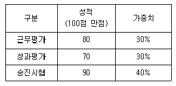
- 80
- 81
- 82
- 83
(정답률: 58%)
69. 단순 회귀모형에서 잔차에 의한 제곱합(SSE)이 4339이고, 회귀에 의한 제곱합(SSR)이 11963일 때, 결정계수는?
- 2.76
- 0.27
- 0.36
- 0.73
(정답률: 40%)
70. 설명변수(X)와 반응변수(Y)사이에 단순 회귀모형을 가정할 때, 회귀직선의 절편에 대한 추정값은?
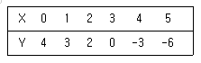
- 1
- 3
- 5
- 7
(정답률: 31%)
71. 확률변수 X의 분포가 자유도가 각각 a와 b인 F(a, b)를 따른다면 확률변수 Y=1/X의 분포는?
- F(a, b)
- F(1/a, 1/b)
- F(b, a)
- F(1/b, 1/a)
(정답률: 31%)
72. 모평균이 10이고 모분산에 4인 모집단으로부터 100개의 표본을 추출하였을 때 표본평균을
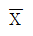
라면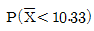
는? (단, Z~N(0, 1)일 때, P(Z>1.96)=0.025, P(Z>1.65)=0.⑤, P(Z<8.25)=0, P(Z>0.825)=0.2⑤이다.)- 0.795
- 0.95
- 0.975
- 1
(정답률: 38%)
73. 중심극한정리에 대한 정의로 옳은 것은?
- 모집단이 정규분포를 따르면 표본평균은 정규분포를 따른다.
- 모집단이 정규분포를 따르면 표본평균은 t-분포를 따른다.
- 모집단의 분포에 관계없이 표본평균의 분포는 표본의 크기가 커짐에 따라 근사적으로 정규분포를 따른다.
- 모집단의 분포가 연속형인 경우에만 표본평균의 분포는 표본의 크기가 커짐에 따라 근사적으로 정규분포를 따른다.
(정답률: 41%)
74. 제1종 오류와 제2종 오류를 범할 확률을 각각 α와 β라 할 때 다음 설명 중 옳은 것은?
- α+β=1이면 귀무가설을 기가해야 한다.
- α=β이면 귀무가설을 채택해야 한다.
- 주어진 표본에서 α와β를 동시에 줄일수는 없다.
- α≠β이면 항상 귀무가설을 채택해야 한다.
(정답률: 50%)
75. 추정량이 가져야할 바람직한 성질이 아닌 것은?
- 편의성(biasness)
- 효율성(efficiency)
- 일치성(consistency)
- 충분성(sufficiency)
(정답률: 49%)
76. p-값(p-value)과 유의수준(significance level)α에 대한 설명으로 옳은 것은?
- p-값>α이면 귀무가설을 기각할 수 있다.
- p-값<α이면 귀무가설을 기각할 수 있다.
- p-값=α이면 귀무가설을 반드시 채택된다.
- p-값과 귀무가설 채택여부와는 아무 관계가 없다.
(정답률: 56%)
77. 이산형 확률변수 (X, Y)의 결합확률분포표가 다음과 같이 주어진 경우, X와 Y의 상관계수에 대한 설명으로 옳은 것은?
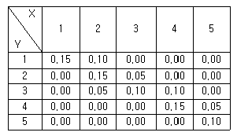
- 상관계수는 양의 값을 갖는다.
- 상관계수는 음의 값을 갖는다.
- 상관계수는 0이다.
- 상관계수를 구할 수 없다.
(정답률: 47%)
78. I개 그룹의 평균을 비교하고자 한다. 다음 일원분산분석 모형에 대한 가설 H0:α1=α2=ㆍㆍㆍ=αI=0을 유의수준 0.⑤에서 F-검정 결과 p-값이 0.07이었을 때의 추론결과로 옳은 것은?
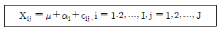
- I개 그룹의 평균은 모두 같다.
- I개 그룹의 평균은 모두 다르다.
- I개 그룹의 평균 중 적어도 하나는 다르다.
- I개 그룹의 평균은 증가하는 관계가 성립한다.
(정답률: 32%)
79. 어느 조사기관에서 대한민국에 거주하는 10세 아동의 평균키는 112cm이고 표준편차가 6cm인 정규분포를 따르는 것으로 보고하였다. 이 결과를 확인하기 위하여 36명을 무작위로 추출하여 측정한 결과 표본평균이 109cm 이었다. 가설 H0:μ=112 vs H1:μ≠112에 대한 유의수준 5%의 검정 결과로 옳은 것은? (단, z0.025=1.96, z0.⑤=1.645이다.)
- 귀무가설을 기각한다.
- 귀무가설을 기가할 수 없다.
- 유의확률이 5%이다.
- 위 사실로는 판단할 수 없다.
(정답률: 42%)
80. 모표준편차가 σ인 모집단에서 크기가 10인 표본으로부터 표본평균을 구하여 모평균을 추정하였다. 표본평균이 표준오차를 반(1/2)으로 줄이려면, 추가로 표본을 얼마나 더 추출해야 하는가?
- 20
- 30
- 40
- 50
(정답률: 35%)
81. 두 개의 정규모집단으로부터 추출한 독립인 확률표본에 기초하여 모분산에 대한 가설
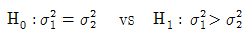
을 검정하고자 한다. 검정방법으로 옳은 것은?- t-검정
- z-검정
- x2-검정
- F-검정
(정답률: 34%)
82. 가설검정에서 유의수준으로 1% 또는 5%중 어느 것을 선택할 것인가에 대한 설명으로 옳은 것은?
- 제1종은 오류를 범할 확률이 보다 작은 검정을 수행하기 위해 유의수준 1%를 선택한다.
- 제2종은 오류를 범할 확률이 보다 작은 검정을 수행하기 위해 유의수준 1%를 선택한다.
- 제1종은 오류를 범할 확률이 보다 작은 검정을 수행하기 위해 유의수준 5%를 선택한다.
- 제2종은 오류를 범할 확률이 보다 작은 검정을 수행하기 위해 유의수준 5%를 선택한다.
(정답률: 37%)
83. 다음 그림은 모회귀선과 표본회귀선을 나타낸 것이다. 잔차에 해당하는 부분은?
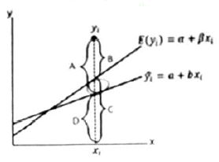
- A
- B
- C
- D
(정답률: 35%)
84. 성공확률이 0.5인 베르누이 시행을 독립적으로 10회 반복할 때, 성공이 1회 발생할 확률 A와 성공이 9회 발생할 확률 B 사이의 관계는?
- A<B
- A=B
- A>B
- A+B=1
(정답률: 49%)
85. 귀무가설이 사실임에도 불구하고 귀무가설을 기각하는 오류를 범할 확률의 최대 허용한계는?(오류 신고가 접수된 문제입니다. 반드시 정답과 해설을 확인하시기 바랍니다.)
- 유의수준
- 검정력
- 통계적 유의성
- 제1종 오류
(정답률: 42%)
86. 단위가 다른 두 집단 간에 산포를 비교 할 때 가장 적합한 측도는?
- 분산
- 범위
- 변동계수
- 사분위범위
(정답률: 46%)
87. 세 그룹의 평균을 비교하기 위해 각 수준에서 5번식 반복 실험한 일원분산분석 모형 Xij=μ+αi+Єij', i=1,2,3, j=1,2,ㆍㆍㆍ,5에 대한 분산분석표가 아래와 같을 때, (ㄱ), (ㄴ)에 들어갈 값은?
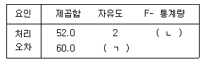
- 12, 4.8
- 12, 5.2
- 13, 4.8
- 13, 5.2
(정답률: 47%)
88. 키와 몸무게의 상관계수가 0.6으로 계산되었다. 키에 2를 곱하고, 몸무게는 3을 곱하고 1을 더한 후 계산된 새로운 변수들 간의 상관계수는?
- 0.28
- 0.36
- 0.52
- 0.60
(정답률: 38%)
89. N(μ, σ2)인 모집단에서 표분을 임의추출할 때 표본평균이 모평균으로부터 0.5σ이상 떨어져 있을 확률이 0.3174이다. 표본의 크기를 4배로 할 때, 표본평균이 모평균으로부터 0.5σ이상 떨어져 있을 확률은? (단, Z가 표준정규분포를 따르는 확률변수일 때, 확률 P(Z>z)은 다음과 같다.)
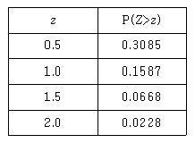
- 0.0456
- 0.1336
- 0.6170
- 0.6348
(정답률: 20%)
90. 정규모집단 N(μ, σ2)로부터 취한 n의 표본 X1, X2, ㆍㆍㆍ, Xn에 근거한 표본평균과 표본분산을 각각
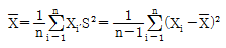
이라 할 때, 통계량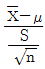
의 분포는?- t(n) : 자유도 n인 t-분포
- t(n-1) : 자유도 n-1인 t-분포
- X2(n): 자유도 n인 X2-분포
- X2(n-1): 자유도 n-1인 X2-분포
(정답률: 43%)
91. 앞면과 뒷면이 나올 확률이 동일한 동전을 10번 독립적으로 던질 대 앞면이 나오는 횟수를 X라하면 X의 기댓값과 분산은?
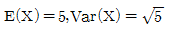
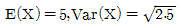
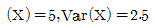
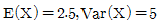
(정답률: 52%)
92. 다음 중 이항 분포의 특징이 아닌 것은?
- 시험은 n개의 동일한 시행으로 이루어진다.
- 각 시행의 결과는 상오 배타적인 두 사건으로 구분된다.
- 성공할 확률 P는 매 시행마다 일정하다.
- 각 시행은 서로 독립적이 아니라도 가능하다.
(정답률: 58%)
93. 모평균이 추정량
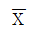
의 85% 오차한계를 추정하기 위하여 반드시 필요한 통계량은? (단, 모분산은 모른다고 가정한다.)- 평균간 차이에 대한 표준오차
- 표본상관계수
- 표본의 표준편차
- 사분위범위
(정답률: 44%)
94. 관광버스가 목적지에 도착할 때까지 시속 80km로 운행하였으나 돌아올 때는 시속 100km로 돌아왔다 이 관광버스의 평균운행속도(km)는?
- 90.42
- 89.44
- 88.89
- 86.67
(정답률: 34%)
95. 다음 자료에 대한 설명으로 틀린 것은?
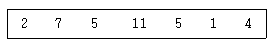
- 범위는 10이다.
- 중앙값은 5.5이다.
- 평균값은 5이다.
- 최빈값은 5이다.
(정답률: 64%)
96. 대학생들의 정당 지지도를 조사하기 위해 100명을 뽑은 결과 45명이 지지하는 것으로 나타났다. 지지도에 대한 95% 신뢰구간은? (단, Z0.025=1.96, Z0.⑤=1.645이다.)
- 0.45±0.0823
- 0.45±0.0860
- 0.45±0.0920
- 0.45±0.0975
(정답률: 38%)
97. 5명의 남자와 7명의 여자로 구성된 그룹으로부터 2명의 남자와 3명이 여자로 구성되는 위원회를 조직하고자 한다. 위원회를 구성하는 방법은 몇 가지인가?
- 300
- 350
- 400
- 450
(정답률: 55%)
98. 어떤 시험에 응시한 응시자들이 시험문제를 모두 풀이하는데 걸리는 시간은 평균 60분, 표준편차 10분인 정규분포를 따른다고 한다. 이 시험의 시험시간을 50분으로 정한다면 시험에 응시한 1000명 중 시간 내에 문제를 모두 풀이하는 학생은 몇 명이 되겠는가? (단, P(Z<1)=0.8413, P(Z<2)=0.9772, P(Z<3)=0.9987이다.)
- 156
- 158
- 160
- 162
(정답률: 41%)
99. 어느 공정에서 생산된 제품 10개 중 평균적으로 2개가 불량품이라고 알려져 있다. 그 공정에서 임의로 제품 7개를 선택하여 검사한다고 할 때 불량품의 수를 Y라고 하자 Y의 분산은?
- 1.4
- 1.02
- 1.12
- 0.16
(정답률: 41%)
100. 다음은 어느 손해보험회사에서 운전자의 연령과 교통법규 위반횟수 사이의 관계를 알아보기 위하여 무작위로 추출한 18세 이상, 60세 이하인 500명의 운전자 중에서 지난 1년 동안 교통법규위반 횟수를 조사한 자료이다. 두 변수 사이의 독립성검정을 하려고 할 때 검정통계량의 자유도는?
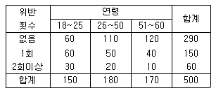
- 1
- 3
- 4
- 9
(정답률: 48%)